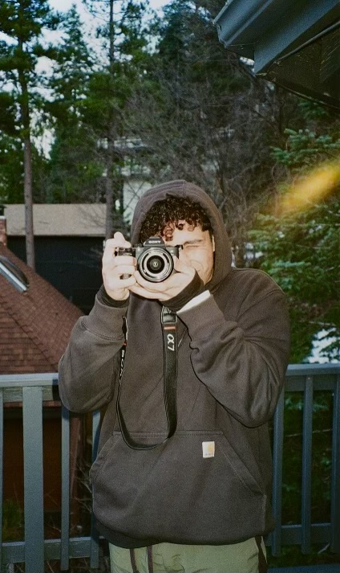
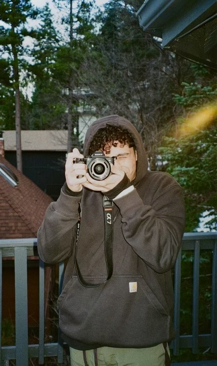

Professional Background
My name is Yazeed Samaenah, a Management Information Systems major at San Diego State University, graduating in May 2025. Passionate about the intersection of technology, marketing, and data analytics, I have experience working with AI-driven solutions, digital marketing, and content creation. My background includes an internship at Cisco, where I developed a Generative AI assistant for the ACE platform, and a role as a Marketing Student Assistant at SDSU. I am also an award-winning filmmaker and freelance photographer, blending creativity with technical expertise. I thrive on solving complex problems, leveraging data for strategic insights, and continuously exploring emerging technologies. In my free time I love to play tennis, soccer, and even snowboard.
 
